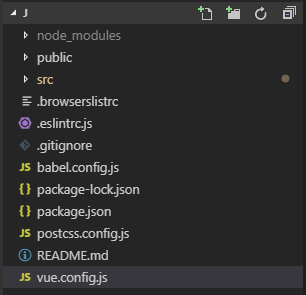

接下来就是多页面应用的配置啦，安装完vue 3.0可以发现目录比2.0的精简了很多，
public相当于原来的static，里面的index.html是项目的入口 ，src同以前一样，cli3.0没有build和config了， 想要配置的话，需要在项目根目录下创建vue.config.js文件
1.在根目录下创建vue.config.js 文件，右键-新建文件

2.配置vue.config.js文件
直接复制代码粘贴即可：
module.exports = {
// 基本路径
baseUrl: '/',
// 输出文件目录
outputDir: 'dist',
// eslint-loader 是否在保存的时候检查
lintOnSave: true,
// use the full build with in-browser compiler?
// https://vuejs.org/v2/guide/installation.html#Runtime-Compiler-vs-Runtime-only
compiler: false,
// webpack配置
// see https://github.com/vuejs/vue-cli/blob/dev/docs/webpack.md
chainWebpack: () => {},
configureWebpack: () => {},
// vue-loader 配置项
// https://vue-loader.vuejs.org/en/options.html
vueLoader: {},
// 生产环境是否生成 sourceMap 文件
productionSourceMap: true,
// css相关配置
css: {
// 是否使用css分离插件 ExtractTextPlugin
extract: true,
// 开启 CSS source maps?
sourceMap: false,
// css预设器配置项
loaderOptions: {},
// 启用 CSS modules for all css / pre-processor files.
modules: false
},
// use thread-loader for babel & TS in production build
// enabled by default if the machine has more than 1 cores
parallel: require('os').cpus().length > 1,
// 是否启用dll
// See https://github.com/vuejs/vue-cli/blob/dev/docs/cli-service.md#dll-mode
dll: false,
// PWA 插件相关配置
// see https://github.com/vuejs/vue-cli/tree/dev/packages/%40vue/cli-plugin-pwa
pwa: {},
// webpack-dev-server 相关配置
devServer: {
open: process.platform === 'darwin',
host: '0.0.0.0',
port: 8080,
https: false,
hotOnly: false,
proxy: null, // 设置代理
before: app => {}
},
// 第三方插件配置
pluginOptions: {
// ...
}
}
3.package.json配置
红色框框的就是运行的指令，可以直接在终端或者cmd窗口输入指令 ：npm run serve 即可启动服务
先写这么多，接下来会介绍如何配置多页面应用